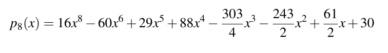
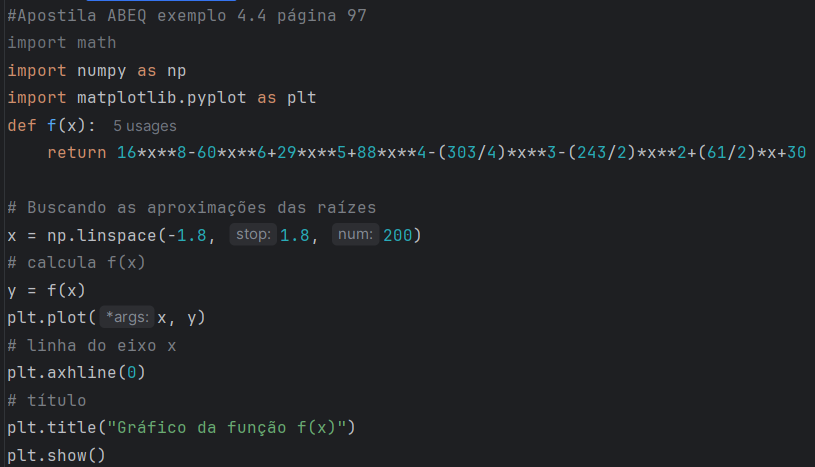
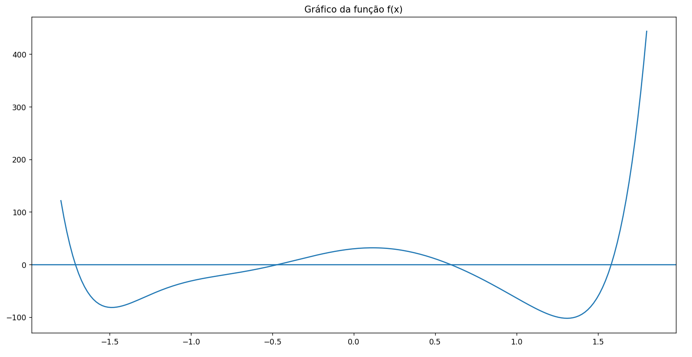
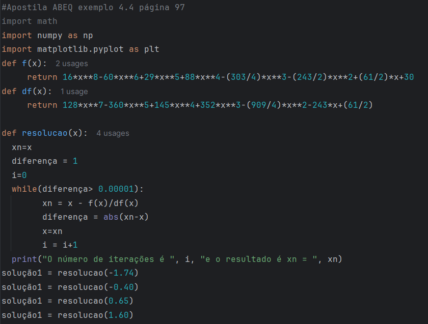
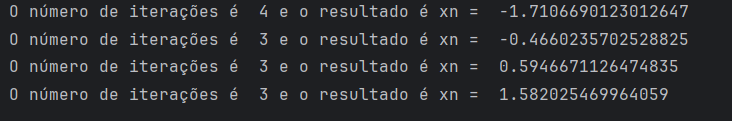
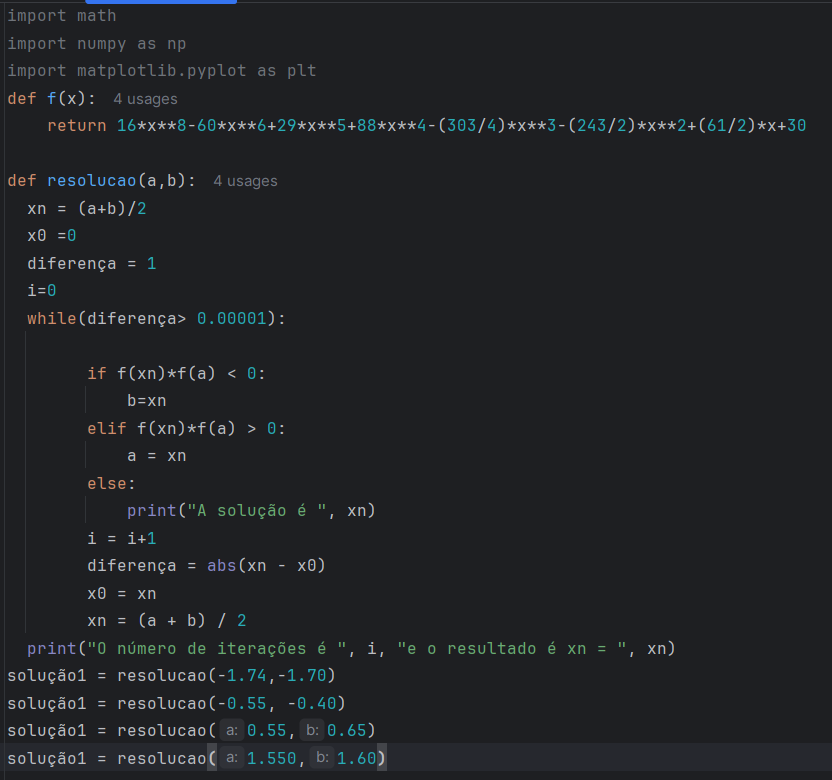
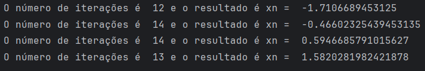
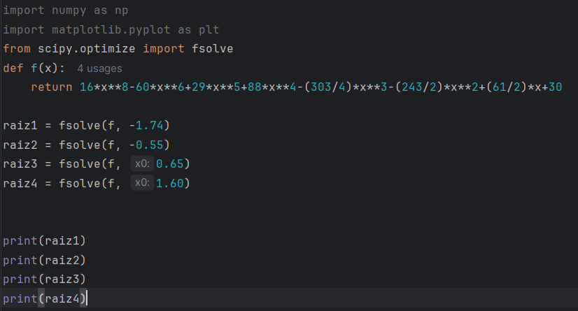

O problema que será resolvido nessa postagem do Química Programada é apresentado na página 96 do livro "Métodos Numéricos para Engenheiros Químicos, disponível gratuitamente no site da ABEQ. Se trata de encontrar, numericamente, as raízes reais de um polinômio de grau 8.
O problema será resolvido com o método da bissecção e o método de Newton-Raphson, a fim de se comparar o desempenho de cada algoritmo. Posteriormente, o problema será resolvido utilizando o método fsolve da biblioteca Scipy e todos os resultados serão comparados com o resultado do livro.
Na Figura 1 é apresentado o polinômio de grau 8 cujas raízes reais deverão ser encontradas. Sabe-se que são 4 raízes reais e 4 raízes complexas. Aqui nós iremos apenas encontrar as raízes reais.
Na Figura 2 apresentamos os comandos em Python para plotar o gráfico do polinômio para encontrar aproximações para as raízes. Na Figura 3 podemos ver o gráfico com os pontos onde o polinômio corta o eixo x. Para resolução pelo método de Newton-Raphson, precisamos encontrar um valor que será usado como uma aproximação para cada raiz. Para resolução pelo método da bissecção precisamos de 2 valores para iniciar as iterações. Esses valores escolhidos, chamados a e b, devem ser tais que f(a) e f(b) tenham sinais diferentes (ou seja, um acima do eixo x e outro abaixo do eixo x). Esses valores não precisam ser necessariamente próximos da raiz, mas devem satisfazer a condição de mudança de sinal da função. Para encontrar as raízes com Newton-Raphson, foram escolhidas as aproximações -1,74, -0,40, 0,65 e 1,60. Para resolução pelo método da bissecção, escolhemos os valores a, b = (-1.74,-1.70), (-0.55, -0.40), (0.55,0.65) e (1.550,1.60).



Na Figura 4 temos o algoritmo para resolução do polinômio pelo método de Newton-Raphson. Na Figura 5 é apresentada as soluções que foram encontradas e o número de iterações para convergir com um erro menor que 0,00001. Para Newton-Raphson, vemos que foram necessárias entre 3 e 4 iterações.


Na Figura 6 temos o algoritmo para resolução do polinômio pelo método da Bissecção. Na Figura 7 é apresentada as soluções que foram encontradas e o número de iterações para convergir com um erro menor que 0,00001. Para Bissecção, vemos que foram necessárias entre 12 e 14 iterações.


O método de Newton-Raphson apresentou convergência rápida devido à boa escolha do chute inicial e ao comportamento suave da função na região da raiz. Ele é tipicamente mais rápido que outros métodos. Já o método da bissecção apresentou uma convergência mais lenta.
Na Figura 8 temos os comandos necessários para resolução das raízes do polinômio utilizando o método fsolve da biblioteca Scipy do Python. O método fsolve utiliza algoritmos baseados em Newton-Raphson, como o método híbrido de Powell, incorporando aproximações numéricas da derivada e estratégias de estabilização para melhorar a convergência.

Os valores encontrados para as raízes usando fsolve foram : -1.71066901, -0.46602357, 0.59466711 e 1.58202547. Tantos os valores obtidos com o fsolve quanto os valores obtidos com algoritmo desenvolvido para o método da bissecção e de Newton-Raphson estiveram de acordo com o resultado proposto pelo livro "Métodos Numéricos para Engenheiros Químicos."
Desenvolvimento : Química Programada